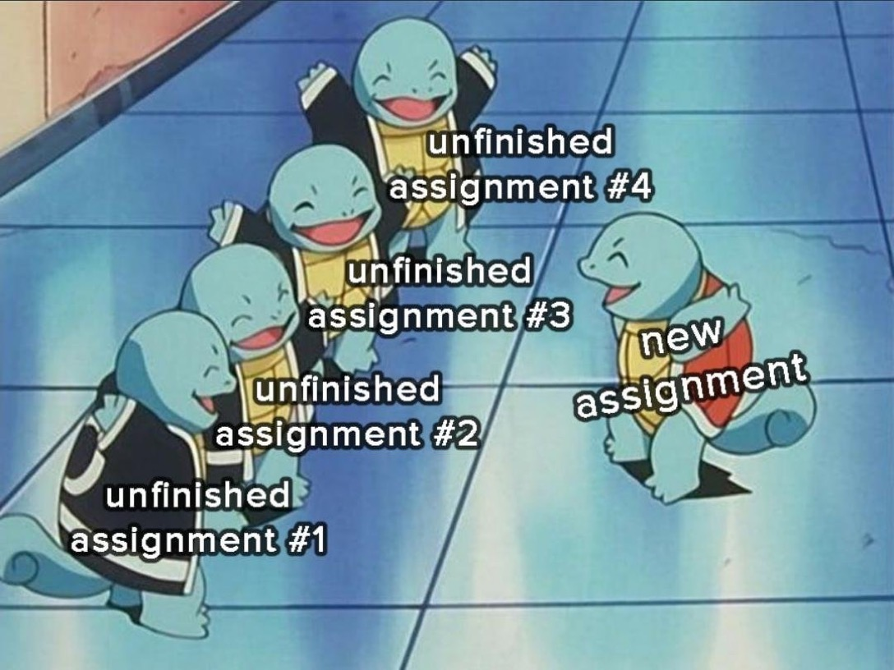

Syllabus
This is an advanced elective on the topic of algorithms that learn patterns from data. Artificial intelligence, predictive analytics, computational science, pattern recognition, signal processing, and data science are all disciplines that draw heavily on techniques from machine learning. The course focuses almost entirely on predictive models, and places special emphasis on questions of fairness in automated decision-making.
Learning Objectives
A learning objective is a primary goal for your learning by the end of the course. You’re successful in CSCI 0451 when you achieve excellence against these learning objectives. We have six learning objectives in CSCI 0451.
| Theory | You will describe the broad mathematical structure of modern machine learning algorithms, and the details of several classical examples. |
| Implementation | You will implement classification and regression algorithms in efficient, usable Python programs. |
| Navigate | You will navigate the package ecosystem for machine learning in Python. |
| Experiment | You will experiment with machine learning models, audit their performance, and communicate about your findings. |
| Social Responsibility | You will interrogate sources of bias, harm, and disparity in machine learning models, especially with regard to gender, race, and class. |
| Project | You will complete a long-term project that involves significant implementation or experimentation with machine learning tools. |
Readings
It is not necessary for you to purchase any books for this course. We will have frequent readings from the following two texts:
- A Course in Machine Learning by Hal Daumé III is an accessible introduction to many of the topics and serves as a useful source of supplementary readings.
- Barocas, Hardt, and Narayanan (2023) is a text on questions of fairness in automated decision-making which we will use as a source for discussion in several weeks of the course.
Some additional readings can provide useful additional background and may be referenced in some lecture notes or assignments.
- Abu-Mostafa, Magdon-Ismail, and Lin (2012) give a helpful overview of the general problem of using models to gain insight frmo data.
- Hardt and Recht (2022) is a major influence on the overall arc of the notes I have written for the course.
- Bishop (2006) and Murphy (2022) are advanced texts on machine learning from a Bayesian perspective. These texts are most suitable for readers who have already taken at least one course in probability theory. Hastie, Tibshirani, and Friedman (2017) is a similarly advanced text that focuses on frequentist interpretations.
- Deisenroth, Faisal, and Ong (2020) and Kroese et al. (2020) are useful readings focusing on some of the mathematical fundamentals of machine learning theory.
- Zhang, Lipton, and Li (2023) tells a helpful story of the fundamentals of deep learning.
Logistics and Key Policies
| Lecture |
Tuesdays and Thursdays 75 Shannon Street, Room 203 Section A: 12:45pm-2:00pm |
||||||
| Instructor |
Dr. Phil Chodrow
|
||||||
| Important Policies |
I encourage you to call me Phil or Prof. Phil. “Professor Chodrow” is fine if that’s what’s most comfortable for you. You need a laptop and an internet connection for this course, but you don’t need to buy books or other supplies. Generally speaking, you should only email me if you need to talk about something personal or sensitive. We’ll use Slack for all standard course communications. Student Hours are your time to come chat with me about course content. I want to see you in Student Hours. I expect you to prepare to ask for help when approaching me and your fellow students for help on course content. |
Rough Schedule Of Topics
See the complete schedule for more details! I am still working on populating this schedule, and will try to have it set up at least two weeks in advance at all times.
- Week 1: Welcome! Score-based classification.
- Week 2: Linear models in Python, feature maps. Automated decision-making.
- Week 3: Legitimacy of automated decision-making. Auditing models.
- Week 4: Statistical formulations of fairness in classification; normative underpinnings. Incompatibility.
- Week 5: Critical perspectives on fairness in automated decision systems. Flex.
- Spring Break!
- Week 6: Introduction to theory: linear models, empirical risk minimization, regularization. Gradients.
- Week 7: Classical optimization: deterministic first- and second-order methods.
- Week 8: Modern optimization: automatic differentiation; stochastic gradient descent and friends.
- Week 9: Feature maps. Kernel classifiers.
- Week 10: Deep learning. Image classification.
- Week 11: Text classification and word embedding.
- Week 12: Feedback, reflection, projects.
What Will Class Time Look Like?
Most class time will involve the following components:
- 10-20 minutes of a warmup activity that addresses recent lectures or readings.
- 40-50 minutes of lecture, which will often focus on math, theory, and programming examples. My aim is that we usually won’t spend the entire lecture period on theory, and that a major part of most lectures will be hands-on live-coding.
The Warmup Activity
On most days, we’ll have a warmup activity. The warmup activity will usually ask you to engage with the readings and complete some work ahead of class time. This could be a short piece of writing, a math problem, or an implementation of a Python function.
Each day, a few students will be randomly selected to present their work to a small group of peers. It’s ok to ask for help or even pass if you’re not feeling confident in your solution, but you should plan to at least make a good attempt at the warmup before every class period. Your participation on the warmup activity is an important aspect of presence in the course, and I’ll ask you to reflect on it when proposing your course grade.
Demonstrating Your Learning
Collaborative Grading
This course is collaboratively graded. In a nutshell, this means:
- There are no points or scores attached to any assignment. When you turn in assignments, you’ll get feedback on how to revise/resubmit, improve or otherwise proceed in the course, but you won’t get “graded.”
- There also aren’t any firm due dates, although I will give you suggestions on how to maintain a good pace.
- Periodically throughout the semester, you will complete reflection activities to help you take stock of your learning and achievement in the course. In your final activity at the end of the semester, you’ll make a proposal for your letter grade in the course, and support it with evidence of your learning. You and I will then meet to discuss how the course went for you, using your reflection activity and proposal as a starting point. In this conversation, you and I will agree on your final letter grade for the course, which I will then submit to the registrar.
Reflection activities:
Why Collaborative Grading?
Because grading is broken! Traditional points-based grading is ineffective at both (a) accurately measuring student learning and (b) motivating students to learn. I broadly agree with Jesse Stommel when he writes:
Agency, dialogue, self-actualization, and social justice are not possible in a hierarchical system that pits teachers against students and encourages competition by ranking students against one another. Grades (and institutional rankings) are currency for a capitalist system that reduces teaching and learning to a mere transaction. Grading is a massive co-ordinated effort to take humans out of the educational process.
For a course like this, I’d prefer to just not give you grades at all. But, Middlebury says I have to, and so my aim is to instead put the process of grading under your control to the greatest extent that I reasonably can.
Assignments
There are three kinds of assessed assignments in this course, plus a mysterious “Other” category.
| Blog Posts |
Blog posts are the primary way in which you will demonstrate your understanding of course content. Blog posts usually involve: written explanation of some relevant theory; implementation one or more algorithms according to written specifications; performing experiments to test the performance of the implementations; and communicating findings in a professional way. Some blog posts will be more like short essays than problem sets or programming assignments. Your blog posts will be hosted on your own public website (which you will create). This website will serve as your portfolio for the course. |
| Project | Your project is a large-scale undertaking that you will design and complete, usually in a group of 2 or 3, over the course of the semester. Your project should usually involve some combination of data collection, implementation, research of related work, experimentation, deployment, or theory work (but not necessarily all components). Projects are expected to demonstrate deep engagement with both the course content and the problem selected. |
| Process Reflections |
At the beginning of the course, you’ll write a process reflection describing your aspirations for the course—what you want to learn and achieve, and how you’d like to be assessed against your goals. We’ll have a second process reflection mid-way through the course that will allow you to reflect on your progress toward your objectives and consider changing direction if needed. At the end of the course, you’ll write a summary reflection on your learning, accomplishment, and engagement with the class. This is also the place where you’ll propose your final letter grade. I’ll usually give you written feedback on your process reflections. We’ll also meet at the end of the course to discuss your final reflection and agree on your letter grade for the course. |
| Other…? | You may have some topic or idea that especially interests you and which you want to explore. If you’d like to work on this topic and use it to demonstrate your learning in the course, you can propose it to me. I may have suggestions or requested modifications before I agree to count the work in your course portfolio. |
Best-By Dates
While we don’t have formal due dates, there is a benefit to keeping yourself on a schedule. It’s best to complete assignments close to the time when we covered the corresponding content in class, and it’s important for your wellbeing not to let work pile up. I’ll provide “best-by” dates for all assignments. These are my recommendations for when you should submit the first versions of these assignments to me for feedback.
 Image credit: Dr. Spencer Bagley
Feedback
Blog Posts
You will receive feedback and “grades” on your blog posts. Your feedback will describe what we in the course team thought was especially successful and where you have room to improve. Your “grade” will be one of the following:
- E: Excellent, I do not suggest that you spend any more time on this assignment.
- M: Meets expectations, I think that you may be able to learn more by revising this assignment in response to feedback.
- R: Revision suggested, I believe that you need to spend more time with this assignment in order to learn what it has to teach you.
- I: Incomplete, You have more work to do in order to learn what this assignment has to teach you.
There is no formula by which Es, Ms, Rs, and Is are factored into a final grade. Instead, it will be up to you to set goals around these and hold yourself accountable to them.
It is relatively rare to earn an E on a first assignment submission. That’s ok! It’s an opportunity for you to revise and continue to learn. Revising in response to feedback is one of the single most effective ways for you to deepen your learning.
Project
Your project does not receive any formal grades. As one of your final blog posts, you will reflect on your contributions to your project and write about the extent to which you met your goals.
Process Reflections
After you submit process reflections, I will write back to you with my own thoughts on your goals and your progress against them. Process reflections are not otherwise graded, you are required to complete them in order to receive a grade for the course.
What Work Do You Need To Do?
At the beginning of the semester, you’ll write a process reflection that will outline what you’d like to learn and achieve in the course. It’s ok if you don’t meet all your aspirations by the end of the course, and there will be an opportunity to revise mid-way. That said, you are still accountable to yourself and to me, in the following way:
For an A, a student should spend at least 10 productive hours of learning per week of work outside of class.
How you spend those 10 hours is largely up to you and your goals. Some examples:
- You complete many of the assignments that I offer you, to a high degree of quality.
- You complete fewer of the assignments that I offer you, but also propose several different assignments to demonstrate your learning in response to your interests.
- You complete fewer of the assignments that I offer you, but also organize a regular study group or review session.
- You complete fewer of the assignments that I offer you, but complete a final project that goes far beyond the standard project expectations.
- You complete fewer of the assignments that I offer you, but demonstrate considerable outside learning in relevant math, the theory of fairness in machine learning, or some other endeavor.
Notes:
- There are lots of opportunities to practice applied data science workflows via things like Kaggle competitions. This can be a worthwhile use of time, but it’s not guaranteed to help you learn new ideas. With that in mind, these kinds of applied projects are not recommended as part of how you’ll spend your time for this class.
- Data science projects that you do for other classes, consulting, internships, etc. are cool and I would love to hear about them! They don’t count as effort towards this course unless you can describe how the content from this course is informing your projects and how you are spending extra effort on those projects as part of your experience of this course.
Am I Ready for CSCI 0451?
As you enter the course, I’m assuming that you are ready to reflect thoughtfully on guiding your own learning, that you have some achievement in developing programs, and that you have a strong math foundation.
Directing Your Learning
This course asks you to set your own goals and motivate yourself to achieve them. Neither of these tasks are easy. It’s ok to mess up every now and then – we all do! The real question is whether you’re going to look at mistakes and make time to reflect on what to do next time.
Programming
- You can write moderately-complex, object-oriented software.
- You are comfortable reading software documentation and researching how to perform a task that you haven’t seen before.
- You know what a terminal is and how to perform simple operations at the command line.
- You have experience debugging your code and you are ready to do it a lot more.
Math
I am assuming that you remember most of MATH 0200 and CSCI 0200. It’s ok if you haven’t memorized every single fact. What I need is for you to be ready to rapidly look up what you need so that you won’t be slowed down by math along the way.
- Matrix multiplication and inner products
- Everything about \(\mathbf{A}\mathbf{x} = \mathbf{b}\).
- Visualizing linear spaces.
- Eigenvalues, eigenvectors, positive-definite matrices.
- Derivatives, critical points of functions.
I have prepared a mathematics pre-assessment for you to try. This assessment is ungraded and is primarily for you to reflect on your comfort with some of the skills we will need. It’s ok if you are not confident on every problem (especially the problems related to multivariable differentiation). You’ll just want to devote some of your learning effort during the course towards getting more comfortable.
Reviews/Diagnostics
- This resource from Stanford’s CS246 contains most of the linear algebra that you’ll need for the course. The only big topic that’s missing is treatment of the existence of solutions of the linear system \(\mathbf{A}\mathbf{x} = \mathbf{b}\) in terms of the rank of \(\mathbf{A}\). You don’t need to have memorized everything here, but most of it should look familiar.
- Probability is not a formal requirement for CSCI 0451, but some probability can certainly be useful. To brush up on some basics, I suggest Chapter 2 of Introduction to Probability for Data Science by Stanley Chan. This treatment may be a little more advanced than what you learned in CSCI 0200, but you should recognize many of the main ideas.
Course Policies
Laptops
Please bring a laptop, and make sure that it has at least 75 minutes of charge.
Academic Integrity and Collaboration
Academic Integrity
Briefly, academic integrity means that you assume responsibility for ensuring that the work you submit demonstrates your learning and understanding.
To be frank, it’s pretty easy to act without integrity (i.e. cheat) in this course. First, there’s a lot of solution code for machine learning tasks in Python online. Second, I’m literally asking you all to post your assignments publicly online. So, there are lots of opportunities to turn in assignments without actually doing the learning that those assignments are designed to offer you.
I assume that both of us want you to learn some cool stuff. Cheating stops you from doing that, and ultimately wastes both your time and mine. I won’t be vigorously hunting for academic integrity violations, but I may ask you to discuss code or theory with me in class or in our meetings. If I notice you struggling to explain code that you submitted for feedback, I may have questions.
Trust me. Neither of us want this.
Collaboration
I love it! Please collaborate in ways that allow you and your collaboration partners to fully learn from and engage with the content. Sharing small snippets of code or math is often helpful to get someone unstuck, but sharing complete function implementations or mathematical arguments is usually counterproductive.
Here are some general guidelines for how I think about collaboration.
Large Language Models
Large language models (LLMs) like ChatGPT aim to produce helpful, human-like text with a combination of two major mechanisms:
- LLMs use next-token prediction to predict the next entries in a sequence of text by using the previous entries. This enables them to mimic human-produced text. So, if you saw the sequence “I love machine _____”, you might guess that the next word might be “learning” and that it’s probably not “pineapples.”
- LLMs are trained using reinforcement learning with human feedback (RLHF) to produce sentences that are not just realistic but also helpful, nonoffensive, or accurate. They do this using a multistage training process that involves humans rating the quality of candidate texts.
ChatGPT and similar LLMs are shaping many conversations in education at Middlebury and beyond.
While LLMs may have many benefits, they are also the subject of routine deception by powerful, motivated actors. They are powered by massive quantities of low-paying, traumatizing labor. LLMs and automation more generally are furthering labor instability, contributing to reduced wages, and are concentrating the power of a small number of large tech companies.
In This Class
- Work that you submit in this class must demonstrate your learning and understanding. Copy/paste from LLMs like ChatGPT does not do this, and is consequently a violation of academic integrity.
- In particular, English writing in blog posts and project writeups must always be your own words. Using ChatGPT to generate ideas is permissible, but using it to generate text for your blog is a violation of academic integrity.
- Use of ChatGPT or GitHub Copilot to generate solution code for blog posts is likely to detract from your learning and is therefore strongly discouraged.
If you choose to use an LLM in any way in your blog posts or projects, you must:
- Cite your source.
- Describe the contribution of the source to your submitted writeup.
- Describe what steps you have taken to independently verify that your learning from the LLM is indeed correct.
- Remember that you are always personally responsible for the accuracy, quality, and integrity of your work.
Course Environment
You deserve to be welcomed and celebrated by our community. We embrace diversity of age, background, beliefs, ethnicity, gender, gender identity, gender expression, national origin, religious affiliation, sexual orientation, and other visible and non-visible categories. Discrimination is not tolerated in my classroom.
You deserve a learning environment free from gender-based discrimination, sexual harassment, sexual assault, domestic violence, dating violence, and stalking. If you experience these behaviors or otherwise know of a Title IX violation, you have many options for support and/or reporting. Middlebury’s Civil Rights and Title IX Office (CRTIX) can help you navigate your options. Please be aware that I am a Responsible Employee, which means that I am required by the College to report incidents of sexual harassment or sexual violence to CRTIX. There are resources for emotional and mental health care, advocacy, and academic support listed here, some of which are confidential.
You deserve to fully and equitably participate in our learning environment. I am actively putting effort into ensuring that course materials are screen-reader accessible, and welcome feedback on where I can do better. Middlebury’s Disability Resource Center can help you remove barriers to learning in this and other courses.
You deserve to be addressed in the manner that reflects who you are. I welcome to tell me your pronouns and/or preferred name at any time, either in person or via email. Conversely, please address your classmates according to their expressed preferences.
Beyond This Course
General Advice
I am always happy to talk with you about your future plans, including internships, research opportunities, and graduate school applications. Because I am a creature of the academy, I am less knowledgeable about industry jobs, although you are welcome to ask about those too. You can drop in during Student Hours or email me to make an appointment.
Letters of Recommendation
Writing letters of recommendation for students is a fundamental part of my job and something that I am usually very happy to do. Here’s how to ask me for a letter.
© Phil Chodrow, 2024